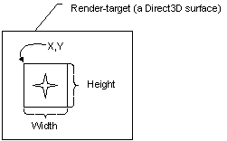

You define the viewport rectangle in C++ by using the D3DVIEWPORT8 structure. The D3DVIEWPORT8 structure is used with the following viewport manipulation methods exposed by the IDirect3DDevice8 interface.
The D3DVIEWPORT8 structure contains four membersX, Y, Width, and Heightthat define the area of the render-target surface into which a scene will be rendered. These values correspond to the destination rectangle, or viewport rectangle, as shown in the following illustration.

The values you specify for the X, Y, Width, and Height members of the D3DVIEWPORT8 structure are screen coordinates relative to the upper-left corner of the render-target surface. The structure defines two additional members (MinZ and MaxZ) that indicate the depth-ranges into which the scene will be rendered.
Microsoft Direct3D assumes that the viewport clipping volume ranges from –1.0 to 1.0 in X, and from 1.0 to –1.0 in Y. These were the settings used most often by applications in the past. During the projection transformation, you can adjust for viewport aspect ratio before clipping. This task is covered by topics in The Projection Transformation section.
Note The D3DVIEWPORT8 structure members MinZ and MaxZ indicate the depth-ranges into which the scene will be rendered and are not used for clipping. Most applications will set these members to 0.0 and 1.0 to enable the system to render to the entire range of depth values in the depth buffer. In some cases, you can achieve special effects by using other depth ranges. For instance, to render a heads-up display in a game, you can set both values to 0.0 to force the system to render objects in a scene in the foreground, or you might set them both to 1.0 to render an object that should always be in the background.